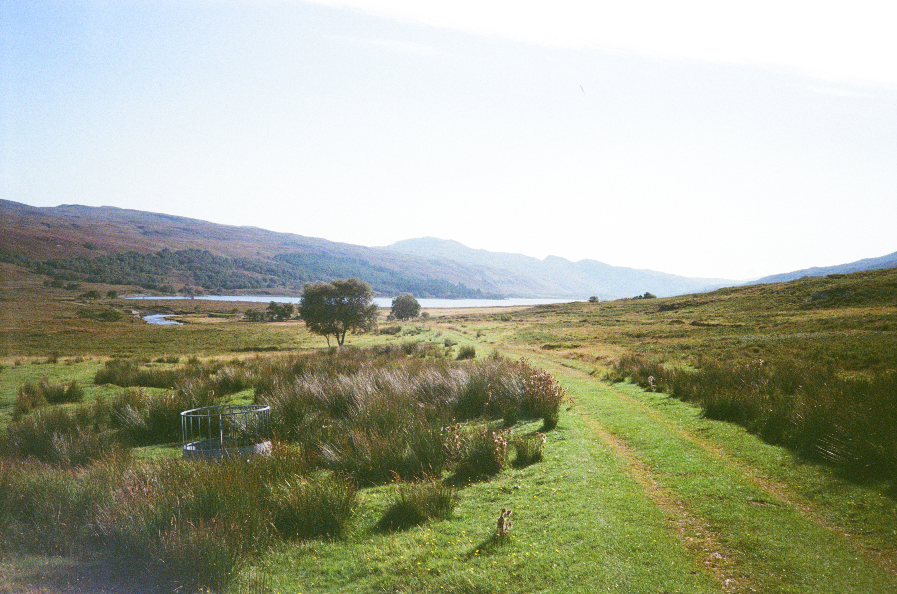

Thought Pieces
Longer-form essays and analysis on the ideas, tensions, and developments shaping the energy transition.

The energy transition is one of the most important and complicated changes taking place in the modern economy. It cuts across power markets, infrastructure, finance, industrial strategy, geopolitics, and technological innovation — often all at once.
That breadth is part of what makes it so interesting, but it can also make the space difficult to navigate. The New Current exists as a place to engage with that complexity more clearly: to break down developments, connect ideas across different parts of the system, and make the subject a little more legible for people who want to spend time with it.
A simple guide to the different parts of the site.
Longer-form essays and analysis on the ideas, tensions, and developments shaping the energy transition.
Shorter notes, quick reactions, and half-formed ideas — a place to think in public and test emerging views.
Live charts and data-led tools designed to make parts of the energy system easier to follow.
A selective view of developments across policy, markets, and technology.
The New Current is a personal project about the energy transition: a place for writing, live intelligence, and learning in public.
It brings together two sides of the same idea. The first is longer-form thinking: essays, notes, and working ideas about markets, policy, technology, and system change. The second is live intelligence: data, reporting, and lightweight tools for keeping track of what is happening across the space.
The aim is to build something that is both useful and open-ended — a site that can hold thought pieces, quick reactions, structured reporting, and live data in one place. It is also a way to explore how coding, automation, AI, and data science can support clearer thinking about a fast-moving and complex subject.
This site is being built step by step as a real project and a learning exercise. Over time, it will continue to evolve: more writing, better data tools, sharper reporting, and a clearer way of linking ideas with evidence.
Part of the point is to make something useful while learning by doing. Any feedback (or requests) are very welcome.
I’ve always enjoyed problem solving. After my completing my degree, I worked at an energy data analytics start-up, where I became fascinated by the complex questions running through the energy transition and learned a huge amount by getting into the weeds of areas like power markets, storage, renewables, project finance, and policy.
I now work in strategy consulting, which has given me a wider lens on the transition across industries, technologies, and geopolitics. I’m building The New Current as a place to keep learning in public, make the space more approachable for others, and improve my ability to use coding, AI, and data science to build something real.
I’m always keen to hear other perspectives, whether that is feedback on the site, reactions to an idea, or suggestions for things to explore next. Please get in touch via the contact button in the top right of the page, or through my LinkedIn.